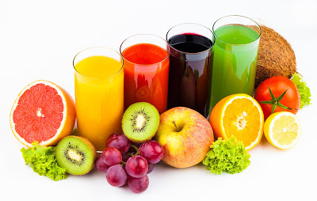

Напитки из фруктов. Яблоки.

Давно в почете у народных лекарей яблоки. В старину считалось, что яблоки, съеденные на ужин, гарантируют легкий и спокойный сон. Плоды, зажаренные в золе, давали больным плевритом, а тертые с жиром прикладывали в виде мази к трещинам на губах и руках для быстрого их заживления. Яблочный сок и теперь считается полезным при атеросклерозе, подагре, ревматизме, мочекаменной болезни, расстройствах желудка и кишечника, малокровии и авитаминозах, заболеваниях печени и почек. Яблоки обладают противомикробными, противогнилостными и противовоспалительными свойствами и препятствуют образованию в организме мочевой кислоты. Чай из яблочной кожуры пьют как успокаивающее средство, при ожирении. Употреблять яблоки советуют людям умственного труда и ведущим малоподвижный образ жизни.
Напиток яблочный. Воду вскипятить с тремя столовыми ложками сахара, гвоздикой или корицей, охладить. Натереть на терке, удалив сердцевину, пять яблок, сбрызнуть лимонным соком. Размешать с водой, приправить по вкусу лимонным соком и сахаром. Подавать после охлаждения в стаканах. Рекомендуется добавить в напиток вишневого сока или сока черной смородины.
Коктейль "Яблочный". Смешать в миксере двести граммов яблочного сока, сок одного лимона со столовой ложкой меда.
Напиток из яблок и слив. Килограмм кисло-сладких яблок вымыть, очистить, удалить сердцевины. Сливы (250 г) вымыть, удалить косточки. Пропустить фрукты через соковыжималку, размешать со стаканом кипяченой воды, приправить по вкусу сахаром, охладить и разлить в стаканчики.
Напиток "Осенний букет". Два стакана воды вскипятить с сахаром и лимонной коркой. Охладить. Яблоки, обработав, натереть на терке (2 яблока больших), сбрызнуть лимонным или клюквенным соком (можно и раствором лимонной кислоты), чтобы не потемнели. Размешать с водой и сливами (300 г зрелых слив), протертыми сквозь сито. Разлить напиток в стаканы, добавив в каждый протертые груши (2 штуки) и по кусочку пищевого льда.
Яблочный коблер. В высокие стаканы, наполненные на 2/3 измельченным льдом, вливают восемьдесят граммов яблочного сока, по десять - лимонного сока и вишневого сиропа, кладут консервированные яблоки, вишни и сливы и тщательно перемешивают напиток. Украшают напиток тонко нарезанными ломтиками консервированного яблока.
Напиток яблочный с мороженым. Плодово-ягодное мороженое (80 г) и яблочный сок (70 r) смешивают в миксере. Сверху в креманки можно добавить тертый шоколад или любое ягодное варенье.
Яблочный крем. Яблоки (2 штуки средних размеров) очистить от кожицы и семенной коробки. Приготовить из них пюре с двумя столовыми ложками сахара и молотой корицей (на кончике ножа). К пюре добавляют охлажденные сливки и взбивают смесь в миксере.
Крем "Утренний". Предварительно охлажденные кефир (70 г), пюре из яблок (50 г) и вишневый сироп (30 г) взбивают в электромикссре.
Яблочный джулеп. Тщательно перемешивают, предварительно охлажденные, яблочный сок (70 г) и мятный сироп (30 г). Сверху на поверхность разлитого по стаканам напитка ложкой положить взбитые сливки.